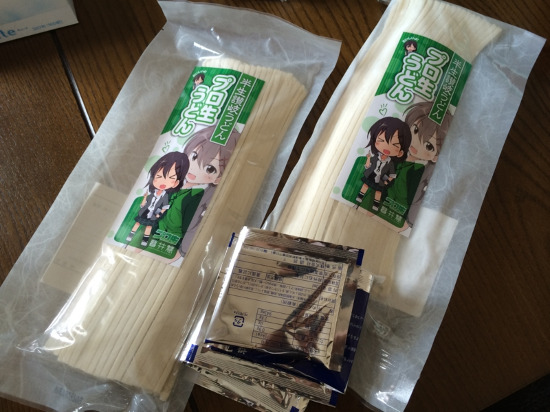
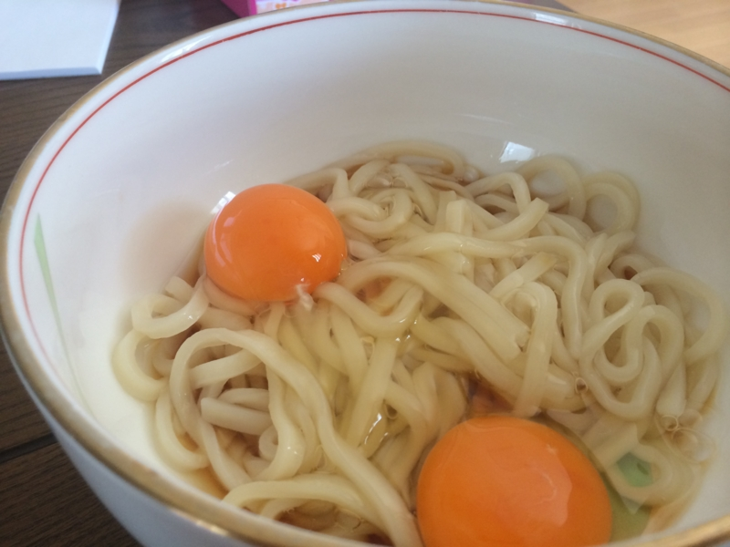

プロ生ちゃんうどん食べたった。
公開日：

生八つ橋がアキバ名物になりつつあるというプロ生ちゃんブランドだが、新しい動きがあったようだ。
これ、4月1日の記事だったので最初はウソかと思ったのだけど、本当のことだった。さっそく頼んでみた。プロ“生”うどんとは洒落ておる。

シンプルに湯がいて付属のダシをいれただけ。調理を担当した親父が勝手に卵を二個もいれたのだけど、多分ひとつでいい。あと、ネギはほしいな！ ネギはほしいな！（大事なことなので二回
お味は……なかなかのコシ。ツルツルとした食感も、食欲をそそる。キワモノかと思ってたけど、案外フツーにおいしかった。ただ、ダシはちょっと味が濃いかもしれない。お気に入りのダシがあればそっちでどうぞ。